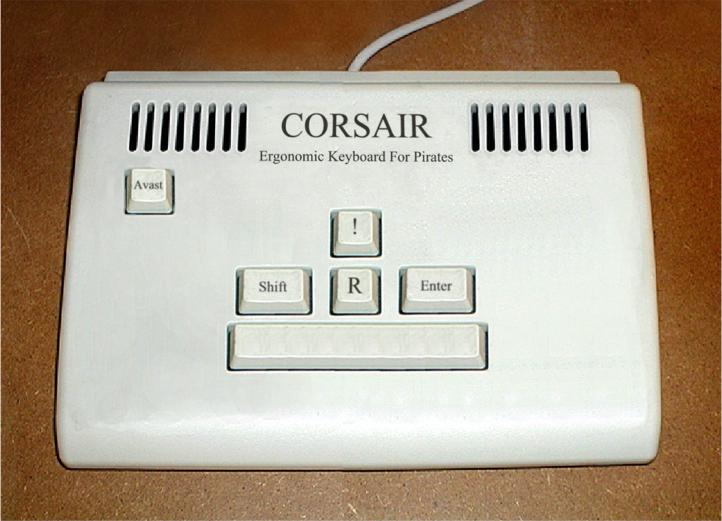
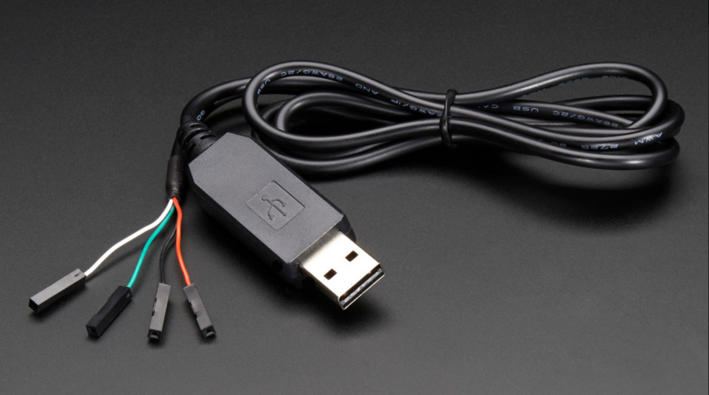

CHIRP Memory Programming
Tyler Tidman VA3DGN
Modern Transceivers
- DC-to-daylight mobile rigs and HTs
- 1000+ "channel" memories
- tiny screens, big manuals
- fancy-combo button presses
- cryptic symbols (e.g.: "R")
Usability
- Image by Bobby Baker
G.I.G.O.
- a few spare transceivers
- lend them out for events
- configure them all the same
- hundreds of button presses
- wrong tones, offsets?

Software Solution
- sold as an accessory, for more $$$
- works on only 1 OS and/or version
- usually different for each rig
- uses custom data formats
- nearly impossible to diagnose errors
Helpful Messages
- "Windows Error 587" -> ERROR_MUTANT_LIMIT_EXCEEDED

- Image from http://icanhascheezburger.com
Enter CHIRP
- over 100 radios supported
- new ones added all the time
- costs nothing, royalty-free
- open, non-proprietary data formats
- will run on nearly every OS (Python + GTK)
Zarro Boogs
"There are two ways to write error-free programs; Only the third one works."
—Anonymous
OSes
- Windows XP, 2000, Vista, 7, 8, 8.1 and so on
- Linux, Mac OS X, (Unix, BSD, Solaris, etc.)
- Image from Jurassic Park (1993)
The scene from the movie involved using the tool known as Fsn.
Another really excellent tutorial for Unix may be found at Jurassicsystems.
Features Focus
- simple "no-frills" interface
- runs on modest hardware (no GUI?)
- basic support for lots of radios
- get/set (some) rig settings
- allow import/export of memories
About CHIRP
- http://chirp.danplanet.com
- Dan Smith KK7DS + many others
- wiki with helpful documentation
- look at the code ("open source")
- GPLv3 license ("free software")
Open Source
"I would love to change the world, but they won't give me the source code."
—Anonymous
Memory Reminders
- name (up to 6 or 7 characters)
- mode, output frequency + offset
- CTCSS/DCS encode/decode
- channel scanning "skip"
- D-STAR goo
What can you do with it?
- share plain text file lists (CSV)
- keep clean backup "image" files
- maintain event-specific lists
- store repeater groups for travel
- fetch info from online sources
Other New Stuff
- P25, DV, PKT, DIGI modes
- support for "duplex" channels
- internationalization (other languages)
- configure band edges and power levels
- extract captured APRS/AX.25 packets
Getting Started
- check if your rig is supported
- TTL-to-USB or serial cable
- whatever weird connector on the end
- build or buy one
- download and install CHIRP (LiveCD?)
Cables
- Image from http://adafruit.com
Binary Images
- each preamble differs slightly
- download from radio to get image file
- copy/insert memories into slots
- upload image back to radio
- save image and/or export to csv
11 is a Crowd
"There are only 10 types of people in the world: Those who understand binary and those who don't."
—Anonymous